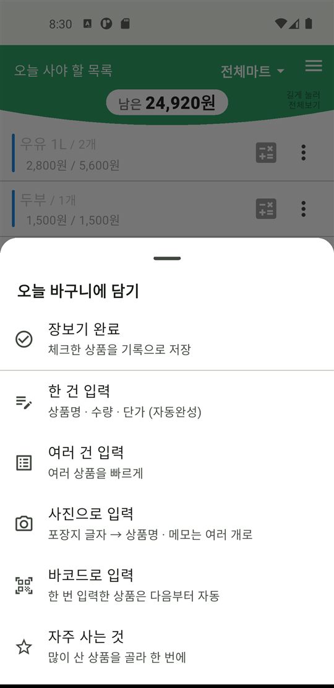

오늘 장보기

집에서 담고, 마트에서 체크하고, 끝나면 기록까지.

한 건 · 여러 건 · 사진 글자 · 바코드. 한 번 산 상품은 이름과 지난 가격이 자동으로.
누르면 산 것으로 체크. 위에 남은 예산이 바로 보이고, 넘으면 빨갛게 알려줘요.

화면이 꺼지지 않고, 글씨는 크게, 안 산 것이 위로. 마트에서 한 손으로.

길게 누르면 구입 · 남은 · 예산, 월 예산까지 한 번에 확인.
장보기를 마친 뒤에도 쓸모 있게.
오늘 장보기가 어떤 앱인지, 궁금한 것부터 골라 보세요.
① 담고, 체크하기 — 오늘 살 상품을 담아 두고, 장 보면서 산 것을 바로 체크해요.
② 예산 보면서 장보기 — 바구니별 예산과 월 예산을 정해 두면, 장 보는 동안 구입한 금액과 남은 금액이 바로 보여요.
③ 미리 담아 두고 옮기기 — 나중에 살 것은 임시 바구니나 용도별 바구니에 담아 두었다가, 장 보는 날 오늘 바구니로 옮겨요. 오늘 못 산 상품도 다른 바구니로 옮겨 둘 수 있어요.
④ 쓸수록 편해지기 — 기록이 쌓일수록 상품 이름과 가격이 자동으로 채워져서, 담는 일이 점점 빨라져요.
메모는 적기만 하지만, 오늘 장보기는 마트에서 누르면 체크되고 가격을 넣으면 남은 예산이 바로 계산돼요. 다 사면 기록으로 남아서 다음에 같은 상품을 담을 때 이름과 지난 가격이 자동으로 나와요.
가계부는 쓰고 난 뒤에 적지만, 오늘 장보기는 사기 전에 담고 사는 동안 예산을 보면서 장을 봐요. 장보기 완료를 누르면 그대로 구입 기록이 되니, 따로 가계부를 적지 않아도 월별 장보기 금액이 쌓여요.
네. 지금 버전은 광고 없이 모든 기능을 무료로 쓸 수 있어요.
＋ 버튼에서 고르면 돼요. 한 건씩, 여러 줄을 한 번에, 전단지나 메모를 사진으로 찍어 글자로, 바코드로 담을 수 있어요. 자주 쓰는 방법은 설정 › 담기 메뉴 순서에서 위로 올릴 수 있어요.
네. 나중에 살 것은 임시 바구니에 담거나, 「코스트코」 「아이 준비물」처럼 용도에 맞는 바구니를 만들어 담아 두세요. 장 보는 날 필요한 상품만 골라 오늘 바구니로 옮기면 바로 장보기를 시작할 수 있어요.
찍은 사진에서 글자를 읽어 줄별로 보여 줘요. 원하는 줄을 고르면 「할리스 라떼 500ml」처럼 하나로 합쳐 담거나, 줄마다 따로 담을 수 있어요. 글자 읽기는 폰 안에서 해서 사진이 밖으로 나가지 않아요.
처음 보는 바코드는 이름을 한 번만 붙여 주세요. 그다음부터는 같은 바코드를 찍으면 바로 그 상품으로 담겨요. 바코드 숫자를 직접 입력할 수도 있어요.
예산은 바구니마다 따로 정하고, 월 예산은 설정 › 월 예산 설정에서 정해요. 남은 예산은 바구니 예산에서 체크한 상품의 금액을 뺀 값이에요. 위 녹색 금액을 누르면 예산을 정하고, 길게 누르면 구입 · 남은 · 예산과 이번 달 월 예산까지 한 번에 보여요. 예산을 넘으면 빨간색으로 알려 줘요.
마트에서 한 손으로 쓰기 좋게 바꾼 화면이에요. 화면이 꺼지지 않고, 글씨가 커지고, 안 산 것이 위로 올라와요. 아래 「오늘 바구니」를 길게 누르면 어느 화면에서든 바로 켜져요.
네. 가격을 넣을 때 그 마트의 지난번 가격이 함께 보이고, 기록에서 상품별 가격 변화를 볼 수 있어요. 영수증을 찍어 여러 상품 가격을 한 번에 채울 수도 있어요.
장보기 완료를 누를 때 고를 수 있어요. 오늘 바구니에 남겨두기, 다음에 살 것을 모아 두는 임시 바구니로 옮기기, 또는 지우기 중에서요. 장보기 중에도 상품을 골라 다른 바구니로 이동할 수 있어요.
한 번 산 상품은 이름과 가격이 기록에 남아요. 다음에 몇 글자만 입력해도 상품 이름이 자동으로 나오고, 그 마트의 지난번 가격을 그대로 넣을 수 있어요. 바코드도 한 번 이름을 붙이면 다음부터는 찍기만 하면 돼요.
장보기 완료한 바구니는 구입 기록에 쌓이고, 월별 구입 금액을 그래프로 볼 수 있어요. 설정 › 월 예산 설정에서 한 달 예산을 정하면 남은 월 예산도 보여요.
바구니를 카톡이나 문자로 보내면, 받은 사람이 링크를 한 번 누르면 오늘 장보기 앱의 받은 바구니로 바로 담겨요. 앱이 없는 사람도 링크를 열면 목록을 볼 수 있어요.
카톡 안에서 열린 화면이면 오른쪽 위 메뉴에서 다른 브라우저로 열기를 눌러 보세요. 그래도 안 되면 받은 메시지 전체를 복사해서 앱의 「받은 메시지 붙여넣기」로 넣으면 돼요.
실시간 가족 공유는 준비 중이에요. 지금은 바구니 보내기 · 받기로 나눠 쓸 수 있어요.
회원가입도, 로그인도 없어요. 목록과 기록은 내 폰에만 저장되고 서버로 보내지 않아요.
설정 › 데이터 백업으로 파일을 만들어 새 폰에서 데이터 복원을 하면 그대로 옮겨져요. 앱을 지우면 폰 안의 기록도 함께 지워지니, 가끔 백업해 두세요.
비밀번호를 건 백업 파일은 비밀번호 없이는 아무도 열 수 없어요. 저희도 찾아 드릴 수 없으니 꼭 기억해 두세요. 비밀번호 없이 백업할 수도 있어요.
설정 › 구입 기록 엑셀로 받기에서 엑셀에서 바로 열리는 파일로 받을 수 있어요.
설정 › 글자 크기에서 키울 수 있고, 장보기 모드에서는 더 크게 보여요. 다크 모드도 있어요.
네. 담기, 체크, 사진 글자 읽기, 기록 모두 인터넷 없이 돼요.
지금은 안드로이드(구글 플레이)만 지원해요.
support@amugonasoft.com 으로 보내 주세요. 하나하나 읽고 다음 버전에 반영할게요.